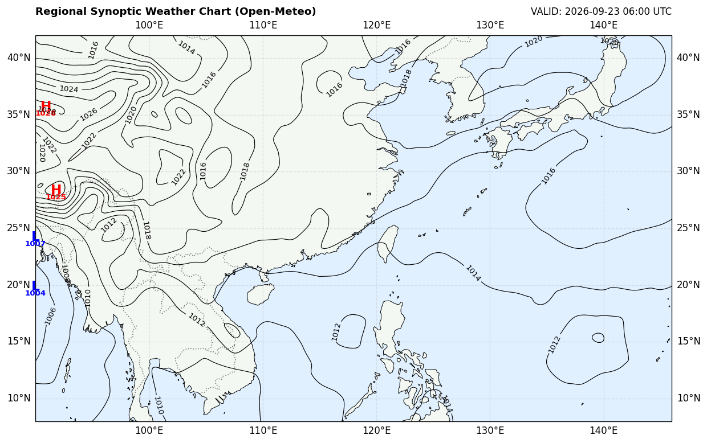

澳門民間氣象台 MSSO

| 測站名稱 | 站代碼 | 暑熱指數 (WBGT) | 危險等級 |
|---|---|---|---|
| 資料載入中... | |||
根據 WBGT 指數等級與相應熱危害風險：
| WBGT 範圍 | 危險等級 | 熱危害風險 |
|---|---|---|
| < 21 | 正常 | 低風險，注意補充水分 |
| 21 - 25 | 注意 | 持續運動/工作需適度休息 |
| 25 - 28 | 警戒 | 熱痙攣、熱疲勞風險增加 |
| 28 - 31 | 高度警戒 | 強烈建議增加休息頻率 |
| 31 - 33 | 危險 | 容易中暑，應減少劇烈戶外活動 |
| 33 - 34 | 非常危險 | 相當容易中暑，應避免劇烈戶外活動 |
| ≥ 34 | 極度危險 | 高危！應立即停止高強度戶外工作 |
黑球濕球溫度 (Wet Bulb Globe Temperature, WBGT) 是國際公認評估熱壓力 (Heat Stress) 的綜合指標，綜合氣溫、濕度、風速及太陽輻射對人體散熱的影響。